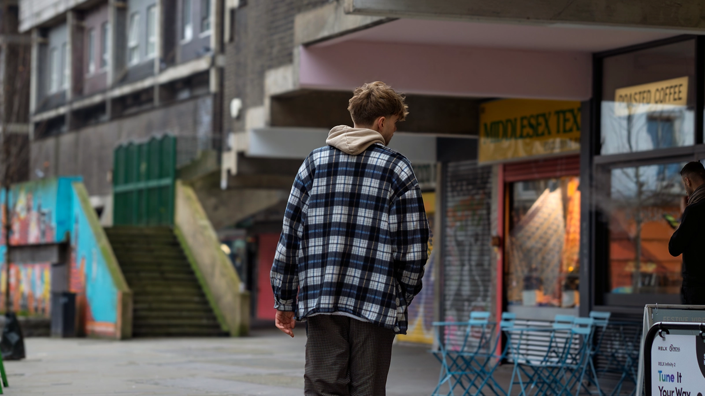

About
jasper is a multi-disciplinary electronic music producer, artist, and creative who blends intricate sound design, emotive melodies, and bold visual worlds. Trained at Guildhall School of Music and Drama, he moves fluidly between music production, vocal engineering, and live audiovisual performance — crafting immersive shows and concept-driven releases that bridge genres and media. Whether producing for others, composing for institutions, or building his own projects from the ground up, jasper’s work is united by attention to detail, curiosity, and a love of turning ideas into experiences.
“A strong first release — great work. Keep building momentum.”— Nick Halkes (XL Recordings)
“A well-thought-out and professional campaign — the foundations of a very successful artist career.”— Sine Buyuka (Manager & Label Founder, Injazero Records)
“An impressive mastery of mixing, programming, and harmonic detail — creating deeply atmospheric and emotionally resonant music.”— Fiachra Mac Oireachtai (Abbey Road Institute)
“A distinctive artistic voice with sophisticated interplay between organic and electronic elements, executed with clarity and imagination.”— Mel Uye-Parker (ICMP)

Mar 2025
Artist Project Launch — Creative Direction
Planned, performed, and executed an original release campaign (promo strategy, visuals, press outreach, launch event). Praised by Nick Halkes (XL Recordings) for initiative and cross-disciplinary skills.
Feb 2025
Barbican × BBC Radio 3 Commission — Composer (Electronic)
Co-created an immersive vocal–electronic piece exploring manipulation, spatial composition, and poetic sound. Performed at the Barbican and broadcast on BBC Radio 3.
Jun 2025
Live AV Show Development — The Premises Studios
Designed and performed an integrated electronic live set with synced lighting/visuals, live looping, and remixing. Built responsive MIDI systems to control audio and visual elements dynamically.
Mar 2023
National Gallery Commission — Composer (String Quartet)
Composed an original string quartet inspired by a selected artwork for the National Gallery’s Friday Lates. Collaborated with classically trained performers in a public setting.
Feb 2022
Norwich Love Light Festival — AV Composer
Created a multimedia installation combining music and projection art to explore light, sound, and emotion.
Jul 2023
RCA Animated Short (LIAF Festival) — Composer
Scored an animated short on mass culture and the industrialisation of art. Rhythm language inspired by Pink Floyd’s “Money,” tightly synced to edit for festival screening.
Jul 2024
Content Producer — Yes Please! / Student Music Network UK
Filmed, edited, and produced artist interviews and backstage content at Wireless and Bearded Theory festivals (NSG, Kairo Keyz, Big Special, Prima Queen). Edited a remote interview with Briston Maroney.
Nov 2023
Head of Production — In Britannia by WhyNotJimi
Oversaw recording, mixing, mastering, and sonic direction for the album, shaping its narrative arc and cohesive palette.
Jun 2025
Producer & Vocal Engineer — Cross-Cultural Pop Project
Blended Mediterranean folk influences with contemporary electronic production, using sonic design and vocal treatment to reflect cultural identity.
Single
i can feel my mind
5:00 • 137 BPM • Electronic / Atmospheric Club
Upcoming • 2025
Drag Race UK
Single • Underground Electronica / Future Downtempo
Upcoming • 2025
Love Away
Single • Electronic / House / Downtempo
Upcoming
Raven (jasper’s mix)
Remix of “Raven” by H.LLS feat. Col3trane • Underground EDM / Jersey Club / Electronica
Album • Electronica / EDM / Downtempo
Available for live electronic sets (15–60 minutes), dance, electronica and downtempo original compositions.
- Immersive audiovisual live shows
- Electronic production & remixing
- Composition for picture / media / instalment
- Collaborative performance projects
- Base: London, UK
- Live setup: Laptop (Ableton Live), Novation Launch Control XL, AKAI MPD218, MIDI keyboard, Ableton integration with frequency and MIDI‑reactive visuals